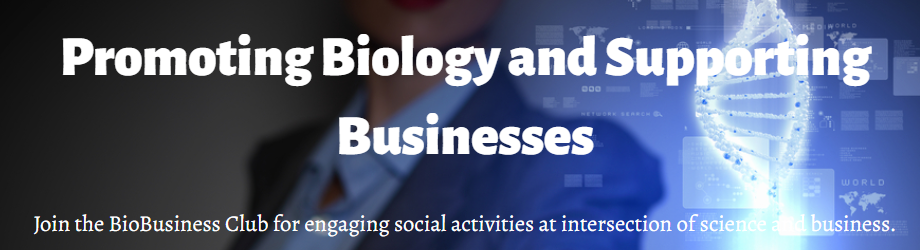

Featured Full-Stack Project Work
ThinkLogic
In 2025, on the Chatsworth Products account, built Vue components and Nuxt midtier items for the law firm's marketing website. I worked on primarily the frontend connection to Kontent.ai managed content.
View Production SiteThinkLogic
In 2024, on the Manatt account, built Vue components and Nuxt midtier items for the law firm's marketing website. I worked on primarily the frontend connection to Kontent.ai managed content.
View Production SiteThinkLogic
In 2024, on the JND account, built reusable Vue 3 components and .NET server routes/middleware, integrating MS SQL Server from Azure to capture, validate and process power the firm’s gathering of potential class member claims. Example suits are:
View Production SiteResolvely AI
In 2024, for an educational counseling startup needed to move to a fullstack application from design prototype. I worked on backend, middle tier, and frontend for the FAQs functionality using MS SQL Server, .NET/C#, and React. Developed a feature proposal to link an OpenAI GPT to curated FAQ database. The Company failed to receive funding and, as of 2025, no artifacts are publically available.
Storybook Network
In 2024, built React components for the infotainment production company marketing website. I worked on primarily the frontend website, middle tier logic, and marketing copy.
View Production SiteOmics Guide
A prototype automated data aggregation service. Webiste markets a database of companies, locations, and key contacts useful for salespeople, jobseekers, and investorsadvertises the book, the data, and the speaking services. The data model includes a pipeline for prototype data aggregation service. The data is useful for sales, marketing, job hunters, and investors. Main technical challenge was to integrate input from multiple sources, APIs, and methods. Transformation of data to geographic, financial, and industry models. AWS cloud technologies are Amplify Mechanical Turk, EC2, S3, and Glue. Front end technologies are Amplify HTML/CSS/JavaScript, React, and Bootstrap. Backend technology is MS SQL Server on prem and MySQL on AWS.
BioBusiness Club
An investment club wanted to use a community strategy to build membership and deliver member services. Main challenge is the balance between developing new functionality and operating a functional website. Cloud technology is Hubspot integrated hosting, CRM, CMS, and CDS. Dev Site 1 is quick site using low code, no code from Hubspot. Dev Site 2 is full stack with React, HTML/CSS/JavaScript, React, and Bootstrap on front end and only planned backend technologies currently.
